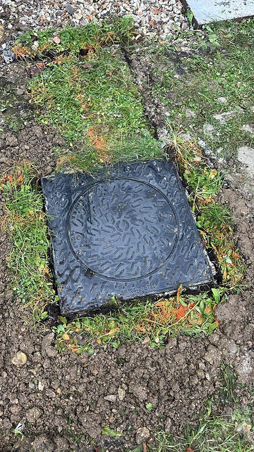
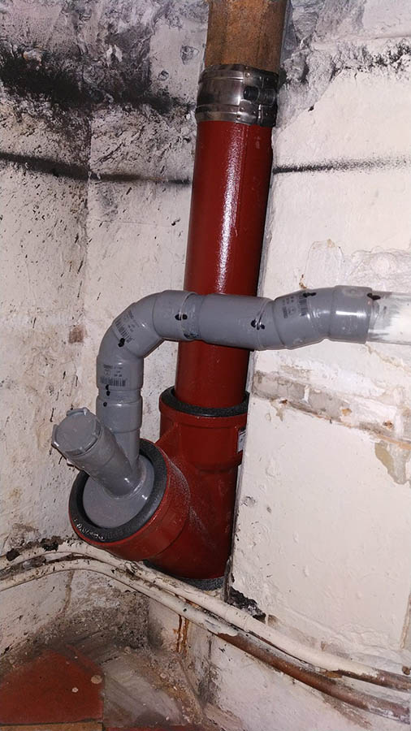
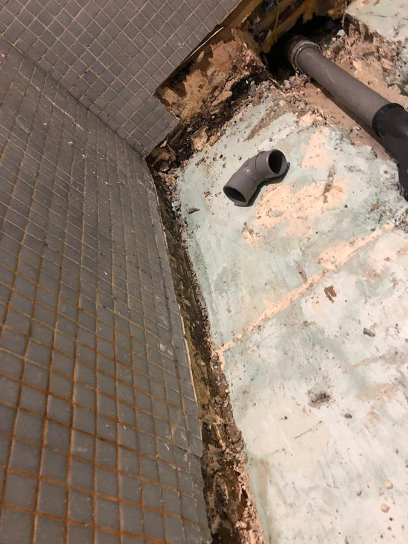

Méthode de recherche de fuite : laquelle pour quelle fuite ?
Syndics, gestionnaires : la méthode de recherche de fuite dépend de ce qui fuit. Ce que montre chaque test, de la caméra thermique au gaz traceur.
Des conseils pour préparer une recherche de fuite ou des travaux en copropriété.

Comment elle se déroule dans un immeuble, quand il faut ouvrir, ce que contient le rapport et qui la paie.
Syndics, gestionnaires : la méthode de recherche de fuite dépend de ce qui fuit. Ce que montre chaque test, de la caméra thermique au gaz traceur.

Eau dans la cave de l’immeuble : d’où elle vient, la recherche de fuite sur une canalisation enterrée, et qui répare entre l’immeuble et la Ville.

Prix d’une recherche de fuite : il dépend du réseau, des accès et des tests. Ce que comprend la recherche, et ce que l’assurance peut prendre en charge.

Fuite sous le carrelage ou la chape des toilettes : repérer le tuyau, ouvrir au bon endroit, réparer et refaire le sol. Un chantier réel en photos.

Tache sous une douche à l’italienne : joints, siphon ou étanchéité sous le carrelage ? Les signes, le test de mise en eau, la réparation et qui paie.

La tache revient et la première recherche n’a rien donné ? Pourquoi une fuite d’eau reste introuvable, ce qu’il faut réunir, et qui organise la suivante.

Recherche de fuite non destructive ou destructive : ce qui évite d’ouvrir, quand il faut ouvrir un mur ou un sol, qui paie, et ce que dit le rapport.

Ce que doit contenir un rapport de recherche de fuite pour le syndic et l’assureur, quand l’origine n’est pas confirmée, et l’attestation de réparation.
Comment se déroule une recherche de fuite dans un immeuble : mesures sans ouvrir, logements visités, ouverture si besoin, durée et rapport avec photos.

Qui paie la recherche de fuite en copropriété ? En principe l’assureur de l’immeuble ou celui du logement d’où part l’eau. Et qui l’organise, cas par cas.
Que faire quand l’eau coule, quand on peut repeindre, puis comment préparer le devis des travaux.

Parquet gonflé ou taché après un dégât des eaux : laisser sécher, mesurer, réparer une zone ou tout reprendre. Deux chantiers en photos.

Plafond taché, qui cloque ou gonfle après un dégât des eaux : les signes de danger, réparer une partie ou tout refaire, l’ordre des travaux, le devis.

Fuite au plafond : coupez l’eau, l’électricité près d’un luminaire, prévenez le voisin du dessus ou le syndic, puis faites chercher d’où vient l’eau.

Après un dégât des eaux, un mur met souvent des semaines, parfois des mois à sécher. On repeint quand la mesure le confirme, avec l’accord de l’assureur.

Dégât des eaux en copropriété : que faire et dans quel ordre, de la fuite à la remise en état. Couper l’eau, prévenir, déclarer, trouver la cause, réparer.

Après un dégât des eaux en copropriété, le devis détaille chaque zone : surfaces, travaux, cause réparée ou non. On peut le demander avant l’expert.
Une colonne qui fuit ou qui se bouche dans l’immeuble : qui appeler, puis réparer ou remplacer.

Odeur d’égout dans l’immeuble : siphon sec, ventilation de la colonne, regards mal fermés. Les vérifications simples, l’inspection, et qui s’en occupe.

Pour les syndics : remplacer les colonnes d’eaux usées d’un immeuble, de l’inspection à la caméra et du repérage amiante jusqu’au vote et au chantier.

Colonne d’immeuble bouchée : prévenir le syndic, suspendre l’usage de l’eau dans les étages, déboucher, inspecter. En principe, la copropriété paie.

Une colonne en fonte fuit dans l’immeuble : quand la réparer, quand la remplacer, et comment se passent les travaux. Avec un chantier réel en photos.
L’eau qui entre par le toit, une terrasse, une verrière ou la façade : d’où elle vient et qui paie.

Infiltration par la façade en copropriété : par où l’eau entre, qui décide des travaux, et un joint de dilatation repris sur cordes, en photos.
Verrière qui laisse passer l’eau : la recherche de fuite au colorant en photos, un chantier de la recherche à la réparation, ce qu’il faut retenir.

L’étanchéité d’un toit terrasse commun est en principe payée par toute la copropriété. Ce que dit l’arrêt du 17 septembre 2026, et le vote en AG.
Ce que prévoient la loi et le règlement de copropriété quand il faut réparer ou faire des travaux.

Électricité des parties communes en copropriété : goulottes ouvertes et fils visibles sur les paliers, un chantier en photos, et ce que disent les textes.

Fuite d’eau chez un voisin absent ou qui refuse d’ouvrir : limiter les dégâts sans entrer, ce que prévoit la loi, le rôle du syndic, le juge, les preuves.

Choisir l’entreprise pour des travaux en copropriété : seuil de mise en concurrence, nombre de devis, devis joints à la convocation.

Rénover la cage d’escalier et le hall d’un immeuble en copropriété : chantier, vote, devis, plomb et amiante, puis un hall avant et après.

Colonne à changer dans un immeuble d’avant 1997 : qui commande le repérage amiante avant travaux, ce que dit le DTA, ce que le rapport change.

Travaux urgents en copropriété : ce que la loi permet au syndic, la provision limitée au tiers du devis, l’assemblée à convoquer, le devis à demander.

Canalisation en copropriété : le règlement dit si elle est commune ou privative. S’il ne dit rien, une colonne qui sert plusieurs logements est commune.
Décrivez la fuite ou les travaux et indiquez le lieu d’intervention. Vous pouvez aussi nous écrire directement par mail.
Pour une réponse rapide : appelez le 06 74 79 07 77 ou écrivez sur WhatsApp
Vos informations servent seulement à répondre à votre demande. Nous les gardons trois ans au plus.
Vos données et vos droitsEnvoyez-nous les informations sur la fuite ou les travaux, avec vos photos. Nous préparons la suite avec vous.
06 74 79 07 77